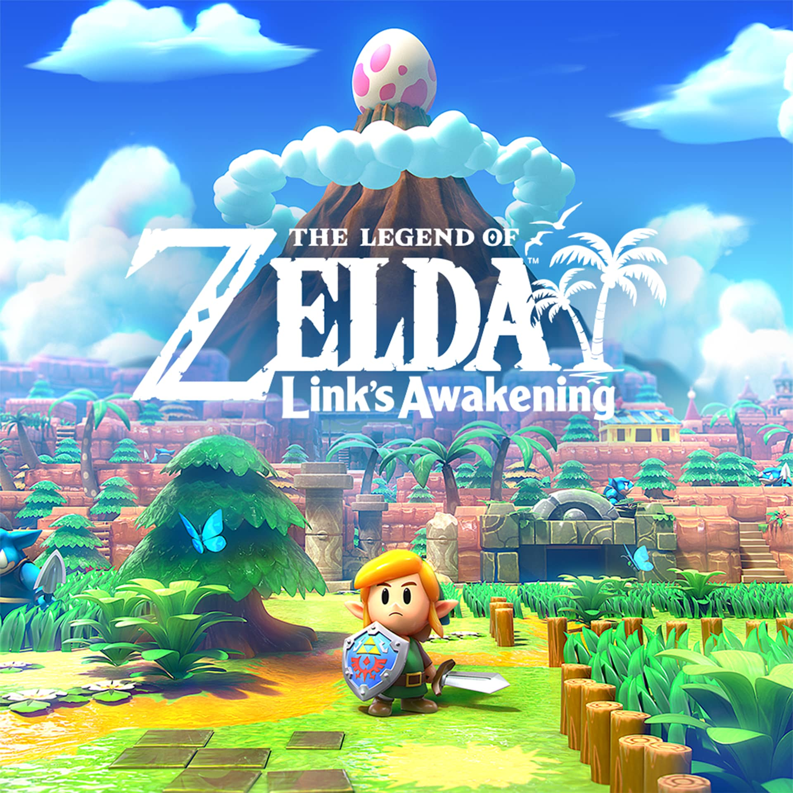
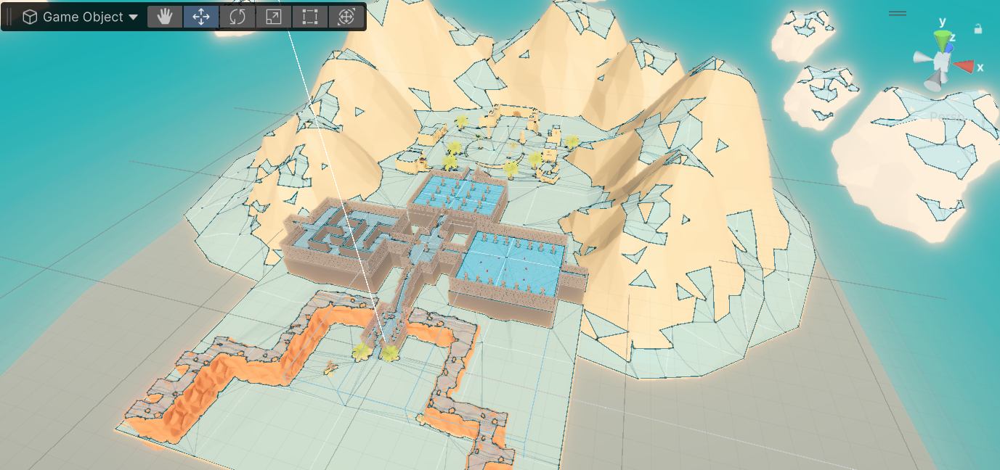
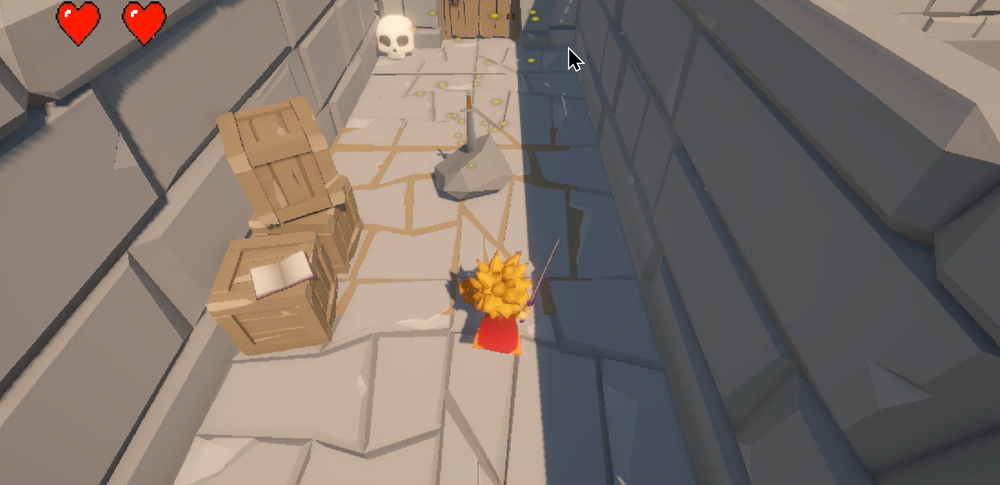

Opdracht
Voor het vak 3D Games aan MCT bij Erasmushogeschool Brussel moesten we in Unity een point-and-click-adventuregame maken met één level en verschillende puzzels. Dit project voerde ik samen met een groepsgenoot uit.

Bron: The Legend of Zelda: Link's Awakening (2019) by Nintendo

Onderzoek
We zijn begonnen met het maken van een moodboard. Hierin bespraken we vragen zoals: Welk genre willen we? en Hoe moet het spel eruitzien?
Ieder van ons maakte een eigen moodboard, die we later combineerden tot één overzicht. Ik stelde voor om de omgeving te baseren op The Legend of Zelda: Link’s Awakening (2019), met een dungeon-achtige setting.

Proces
Na ons onderzoek verdeelden we de taken. Ik was voornamelijk verantwoordelijk voor de environment van het spel. Hiervoor zocht ik gratis low-poly assets in de Unity Store, om een minimalistische, gedetailleerde look te creëren.
Daarnaast hielp ik ook met spelmechanieken, zoals:
- Vijanden die beperkt bleven tot één ruimte
- Het hartensysteem
- Etc.
Mijn groepsgenoot richtte zich vooral op de logica van het spel. Voor de puzzels bedachten we elk een eigen idee:
- Hij stelde voor om een doolhof te maken waar de speler aan het einde een sleutel moest vinden.
- Ik bedacht een puzzel waarbij de speler alle vijanden in een ruimte moest verslaan.
We hadden aanvankelijk vier puzzels gepland, maar besloten uiteindelijk om er drie te maken. Deze keuze maakt het ontwerp van de dungeon overzichtelijker en haalbaarder.


Eindresultaat
We hadden aanvankelijk vier puzzels gepland, maar besloten uiteindelijk om er drie te maken. Deze keuze maakt het ontwerp van de dungeon overzichtelijker en haalbaarder.
Uiteindelijk resulteerde dit in een klein, maar leuk dungeon-level, sterk geïnspireerd op The Legend of Zelda: Link’s Awakening (2019).
